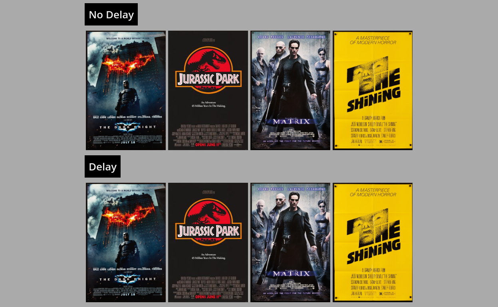

UI/UX Research
Background

For my communications research class at BU, a significant part of it was a semester long research project carried out in small groups. My partner was interested in Film and TV, I was interested in UI/UX, so we decided to meet in the middle and research the UI/UX of streaming services.
Exploration and Prototyping
Using my front end skills, I created mock web pages with different UI effects applied to placeholder movie cards. For example, I was inspired by the hover delay on Netflix to test whether this delay was as annoying to other people as it was to me.
Live DemoDevelopment and Result

My Partner and I worked hard to compile our results into a comprehensive research paper. My favorite result was that my intuition was correct, and the majority of respondants disliked the emulated Netflix delay.
Report Survey